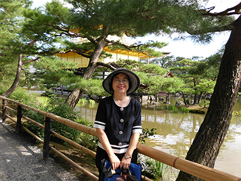
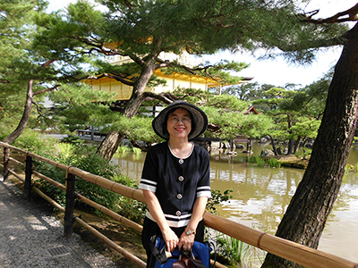

聯絡資訊
| 役 職 ： | 国立政治大学教育学科教授 |  |
| 住 所 ： | 116 臺北市文山區指南路二段64號 國立政治大學教育系 | |
| 電 話 ： | 02-29393091*88007 | |
| FAX： | 02-29396823 | |
| E-mail： | iaezcpc@nccu.edu.tw |
| 役 職 ： | 国立政治大学教育学科教授 |  |
| 住 所 ： | 116 臺北市文山區指南路二段64號 國立政治大學教育系 | |
| 電 話 ： | 02-29393091*88007 | |
| FAX： | 02-29396823 | |
| E-mail： | iaezcpc@nccu.edu.tw |
1992 カリフォルニア 大学 ロサンゼルス校(UCLA) 博士号取得後研究
1987-1992 カリフォルニア 大学 ロサンゼルス 校にて比較及び国際研究所
2007－現在 国立政治大学教師会会長 台湾競争力フォーラム教育部門議長
2006－現在 教育改革総合健康診断フォーラム執行秘書
2001－2002 国立政治大学 - - 性別 - - 平等委員会議長
私は、よく「侠客のような風格がある」と言われる大学教師で、幼い頃から、誰かが弱いもいじめをされていたらその子を助ける、といった心の優しい子供だった。小学生の時は学級委員以外にも、ドッヂボールチームのキャプテンも務めたこともあった。中学生の頃には、方向音痴だったため、入学初日で迷子になり、タクシーの運転手に助けてもらう、なんてこともあった。学業のプレッシャーの中でも、卒業時には優等生の賞をもらった。
高校の統一試験（日本でいうセンター試験）では、小論文（題名：「推動搖籃的手」）でミスをし、悲しみのあまり、家出をした。しかし、一回挫折を味わい、立ちなおしてからは色々と頑張った。再度クラス委員になったり、体育祭の円盤投げ競技で優勝したりした。
幼い頃から医師になるのが夢だったが、作文での入賞をきっかけに、将来の方向を見直し始めた。また、同年の春、学校の先輩が性犯罪に遭ったことから、その後「性教育」の推進に携わることを決意した。
大学在学中当時は、校内がよく深刻な洪水に見舞われたため、生徒は水泳ができることが必須だった。私は4年間で一生懸命練習した。また、クラスメートには私は将来校長になると思われていたが、残念ながら大学院受験に失敗したため、田舎に戻り、ボランティアをすることにした。
ある日原住民の集落を訪れたときのこと。タクシーが山奥で止まり運転手が車から出て行った。私はその当時、原住民に対してマイナスの印象しか抱いてなかったので、山中でいきなり車を停められ、とても恐ろしく思ったが、運転手は茂みの中から戻ってくると彼は私に意外にも桃を渡した。この思い出は私にとって一生忘れられないものになった。
大学院在学中、国際事務の勉強に励み、国内初の日本研修の機会を手に入れた。5年後、国の奨学金をもらいながら、大学院生学会や国際ボランティアに何度も参加し、アメリカ大学婦人協会（AAUW）で世界平和賞を受賞した。
しかし、台湾に帰国しても当時は博士号取得者ですら就職は難しく、教育学界に残る選択肢しか残されていなかった。それまでずっと、国外との比較教育に重点を置いていた私だったが、それからは台湾の教育改革に目を向けることにし、2003年台湾大学の黄光国教授らと共に「教改萬言書」を書し、また「誰捉弄了台灣教改？」も書き綴った。2005年から2006年は志を同じくした友，団体と共に16回にも及ぶ教育改革総合健康診断フォーラム（リンク：http://163.20.78.133）を開き、台湾の教育改革について討論しました。2007年にはハーバード大学を訪問。その間数十ヶ国にも及ぶ教育改革を研究し、台湾教育の未来について模索した。私は、よく雑誌や新聞で自分の台湾社会に対する考えを記載している。また毎週教会を訪問し、台湾の教育の成功を祈祷している。